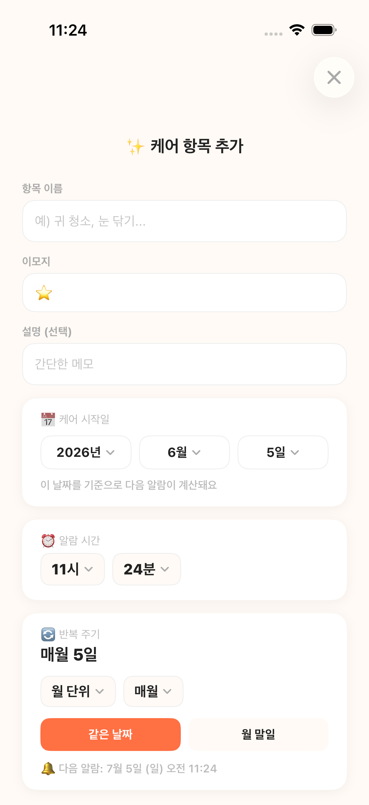
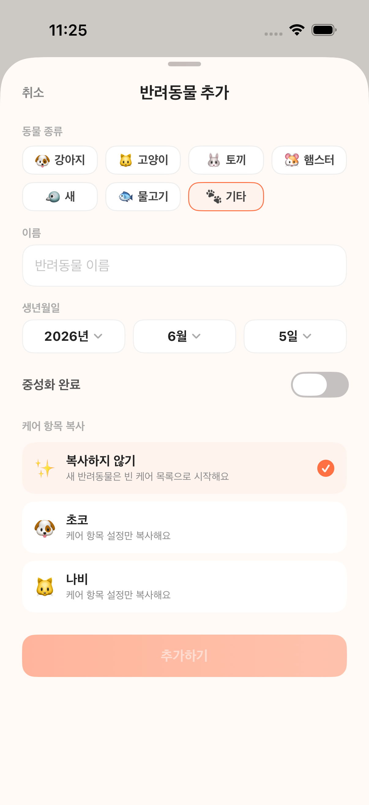
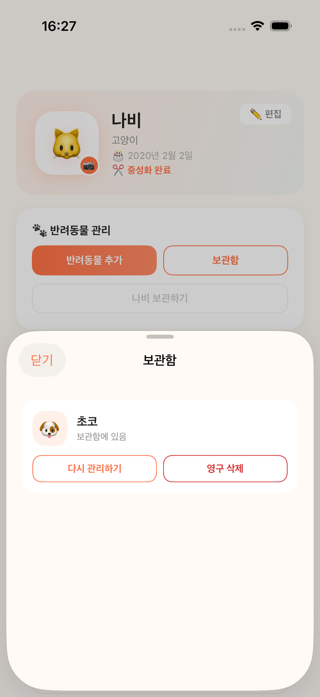

🔔
제때 오는 알림
반복 주기에 맞춰 다음 케어 시각을 자동으로 예약해요. 일·주·월·년, 특정 요일, 월말까지 세밀하게 설정할 수 있어요.
목욕·약·병원까지. 반려동물 케어 루틴을 대신 기억하고
제때 알려주는 따뜻한 알림 앱, 링링.
인터넷 없이 완전히 동작 · 모든 기록은 기기에만 저장

복잡한 설정 없이 바로 쓸 수 있어요.
반복 주기에 맞춰 다음 케어 시각을 자동으로 예약해요. 일·주·월·년, 특정 요일, 월말까지 세밀하게 설정할 수 있어요.
기한 초과·오늘·곧 예정·양호를 색상 뱃지로 표시해 지금 챙겨야 할 항목이 바로 보여요.
완료 기록과 예정 케어를 달력에서 한 번에. 날짜를 탭하면 그날의 상세 일정을 볼 수 있어요.
이름·종류·생일·중성화 여부를 담은 프로필과, 일·월·년으로 보는 체중 변화 차트를 제공해요.
여러 마리를 등록하고 한 번에 전환해요. 새 아이를 추가할 때 기존 케어 항목을 그대로 복사할 수 있고, 잠시 돌보지 않는 아이는 보관함에 넣었다가 언제든 다시 관리할 수 있어요.
로그인도 서버도 필요 없어요. 모든 데이터는 기기에만 저장되고, 인터넷 없이 완전히 동작해요.
홈에서 케어를 챙기고, 달력으로 일정을 보고, 프로필로 우리 아이를 돌봐요.
여러 아이를 추가하고 보관함으로 정리할 수도 있어요.





설치하면 바로 쓸 수 있게 준비돼 있어요. 직접 추가하거나 보관함으로 정리할 수도 있어요.
링링은 계정도, 서버도, 추적도 없어요. 반려동물 프로필과 케어 기록을 포함한 모든 데이터는 오직 기기 안에만 저장됩니다.